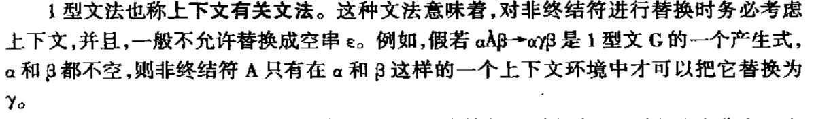

2.1 程序语言的定义
2.1.1 形式语言（语法）
语言是字符串的集合，只考虑字符串本身而不考虑其含义的语言被称为形式语言。例如：L={ε,ab,aabb}
形式语言被抽象地定义为一个数学系统，该系统被称为文法（在无歧义的语境下，也可称为语法）；
其具体由以下四个部分组合而成：
2.1.2 语义
所谓一个语言的语义是指这样的一组规则，使用它可以定义一个程序的意义。这些规则称为语义规则。阐明语义要比阐明语法难得多。现在还没有一种公认的形式系统，借助于它可以自动地构造出实用的编译程序。本书将介绍的是目前大多数编译程序普遍采用的一种方法，即基于属性文法的语法制导翻译方法，虽然这还不是一种形式系统，但它还是比较接近形式化的。
2.2 高级语言的一般特性
2.2.1 高级语言的分类
强制性（过程式）语言
C
应用式语言
基于规则的语言
面对对象语言
2.3 程序语言的语法描述
【预备】
2.3.1 上下文无关文法
所谓上下文无关文法是这样一种文法，百 它所定义的语法范畴(或语法单位)是完全独立于这种范畴可能出现的环境的。
2.3.1.1 从具体的自然语言举出的例子
2.3.1.2 概念
终结符
乃是组成语言的基本符号，在程序语言中就是以前屡次提到的单词符号，如基本字、标识符、常数、算符和界符等。从语法分析的角度来看，终结符号是一个语言的不可再分的基本符号。
非终结符号（也称语法变量）
用来代表语法范畴。例如，“算术表达式”、“布尔表达式”、“赋值句”、“分程序”、“过程”等，它们都是现今程序语言常见的语法范畴。我们也可以说，一个非终结符代表一个一定的语法概念。因此，一个非终结符是一个类（或集合）记号，而不是一个个体记号。例如，“算术表达式”这个非终结符乃代表一定算术式组成的类。因而，也可以说，每个非终结符号表示一定符号串的集合（由终结符号和非终结符号组成的符号串）。
开始符号S
是一个特殊的非终结符号，它代表所定义的语言中我们最终感兴趣的语法范畴，这个语法范畴通常称为“句子 "。但在程序语言中，我们最终感兴趣的是“程序"这个语法范畴，而其它的语法范畴都只不过是构造“程序”的一块块砖石。
产生式
巴克斯范式
⭐例子
答案
构造一个文法，使
2.3.2 语法分析树与二义性
一个文法，如果它的一个句子有两棵或两棵以上的语法树，则称此句子具有二义性。
一个文法含有二义性的句子，则该文法具有二义性。
比如下面这个文法
人们已经证明，二义性问题是不可判定的。即，不存在一个算法，它能在有限步骤内，确切地判定一个文法是否为二义的。我们所能做的事是为无二义性寻找一组充分条件（当然它们未必都是必要的）。
⭐改造二义性文法：利用优先级
例如，在文法(2.1)中，假若规定了运算符‘ +与‘*的优先顺序和结合规则，比方说，让“*“的优先性高于“ +”，且它们都服从左结合，那么，就可以构造出一个无二义文法：
***** 限制
经过上面的讨论，我们对描述程序的上下文无关文法做出以下限制：
⭐2.3.3 形式语言的分类
- 0型：
- 左边至少得有一个非终结符
- 1型（上下文有关文法）：
- 右边比左边长（含等长）
 - 2型（上下文无关文法）：
- 3型（正规文法）：
- 非终结符要么不出现，要出现就出现在最左或者最右
- 等价于正规式
- 任何正规文法都无法产生以下语言